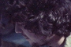
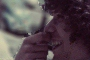
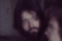

Coisa na roda - créditos
COISA NA RODA
CRÉDITOS COMPLETOS
ELENCO
| GRUPO FALTOU O JOÃO | ||
| Rudi Lagemann | (Guilherme) | |
| Nilo Cruz | (André) | |
| Carlos Grubber | (Lico) | |
| Silvana Krampe | (Angela) | |
| Normélio Krampe | (Duarte) | |
| Betho Mônaco | (Beto) | |
| Ivonete Pinto | (Márcia) | |
| Cleomar Coelho | (convidado na festa 1) | |
| Denise Coelho | (convidada na festa 2) | |
| Luis Henrique Palese | (aluno 1) | |
| Mari Ribeiro | (aluna 2) | |
| Monica Schmiedt | (acampante 1) | |
| Everton Wojahn | (acampante 2) |
 |
| GRUPO VENDE-SE SONHOS | ||
| Pedro Santos | (Ricardo) | |
| Marta Biavaschi | (Sandra) | |
| Marco Sorio | (Werner) | |
| Angel Palomero | (voz de André) | |
| Osvaldo Perrenoud | (voz de Valter) | |
| Wander Wildner | (voz de Beto) | |
| GRUPO DA CASA | ||
| Sérgio Horst | (Alfredo) | |
| Ney Laux | (Victor) |
 |
| E MAIS: | ||
| Beatriz Motta | (Marta) | |
| Renate Grübber | (Carina) | |
| Valter Freitas | (Valter) |
 |
| Cesar Alvarez | (César) | |
| Paulo Gans | (Ganso) | |
| Guilherme Streb | (professor) | |
| Martin Wartchow | (voz do professor) | |
| Babi Kruchin | (menina de deus) | |
| E AS PARTICIPAÇÕES DE: | ||
| Alexandre Kern |  | |
| Ana Kaplan | ||
| Antônio Castro | ||
| Binha Rachewski | ||
| Caco Silveira |  | |
| Carlos Gerbase | ||
| Carolina Gleich | ||
| Darci Cardoso | ||
| Denise Dora | ||
| Geneci Duarte | ||
| Jussa Lerrer | ||
| Katano Lacerda | ||
| Lise Storchi | ||
| Lourdes Hirata | ||
| Luciano Brunet |  | |
| Miguel Ninov | ||
| Ralf Schinke | ||
| Rô Santos | ||
| Roswitha Grübber | ||
| Sônia Coutinho | ||
| Sônia Maluf | ||
| Zeca Gerbase |
EQUIPE
Argumento, Roteiro e Direção: Werner Schünemann
Direção de produção: Rudi Lagemann
Fotografia: Giba Assis Brasil
Assistente de direção: Giba Assis Brasil
Montagem: Werner Schünemann e Giba Assis Brasil
Fotografia adicional: Nelson Nadotti, Werner Schünemann e Roberto Henkin
Sonoplastia e Iluminação: Everton Wojahn
Engenheiro de som: Eduardo Moreira Alves
Fotos de cena: Marta Gleich
Arte dos créditos: Luis Henrique Palese e Monica Schmiedt
Assistência técnica: Leo Sganderla / Otofenic
Filmado em Porto Alegre e Dois Irmãos/RS, de julho a Novembro de 1981.
Estreou no Festival de Super-8 de Gramado, dia 25/03/1982.
VERSÃO EM DVD
Som remasterizado, a partir das dublagens originais,
/ em junho-julho de 2005
Montagem: Giba Assis Brasil
Assistente de montagem: Alfredo Barros
Sincronização de diálogos: Lúcio Born
Arquivo musical: Jailton Moreira
Edição de som: Cristiano Scherer
Ruídos de sala: Celso Coelho
Assistentes de prod. executiva: Flávia Matzenbacher
/ Renata Ferraz
Produção executiva: Luciana Tomasi
/ Nora Goulart
Telecinagem: Estúdios Mega
Finalizado em: Final Cut Pro
Produção: Casa de Cinema de Porto Alegre
25/03/1982